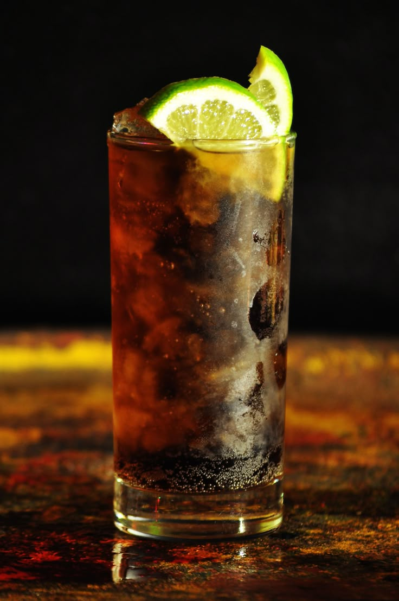

Tradicional jamaicano, com rum escuro, sucos de frutas e bitters, equilibrando doçura e acidez.
Tempo de preparo: 7 minutos

Picante e refrescante, feito com rum escuro, ginger beer e limão, ótimo para quem gosta de drinks com um toque apimentado.
Tempo de preparo: 7 minutos

Versão com rum da clássica combinação de cola e limão, com um toque caribenho e refrescante.
Tempo de preparo: 8 minutos

Refrescante e aromático, feito com rum branco, hortelã, limão e água com gás. Perfeito para dias quentes.
Tempo de preparo: 6 minutos

A combinação do sabor terroso da tequila com o amargor intenso da toranja cria um highball refrescante, perfeito para o clima quente.
Tempo de preparo: 4 minutos

Extremamente simples e prático, o Screwdriver consiste basicamente em vodka e suco de laranja.
Tempo de preparo: 2 minutos

Um drink clássico, conhecido por ser quase uma refeição líquida.
Tempo de preparo: 5 minutos

Uma opção leve, refrescante e fácil de preparar. Combina vodka com água tônica e geralmente leva uma rodela de limão.
Tempo de preparo: 2 minutos

Leve, doce e com sabor cítrico, é perfeito para festas e momentos descontraídos.
Tempo de preparo: 2 minutos

Mistura vodka, suco de cranberry e suco de grapefruit (toranja), oferecendo uma combinação entre o cítrico, o adocicado e o levemente amargo.
Tempo de preparo: 3 minutos

Uma versão quente e cremosa do famoso martini de chocolate. Aveludado, doce e super confortável.
Tempo de preparo: 8 minutos

Versátil e fácil, combina gin com sucos variados (laranja, abacaxi, cranberry), resultando em drinks frutados.
Tempo de preparo: 7 minutos